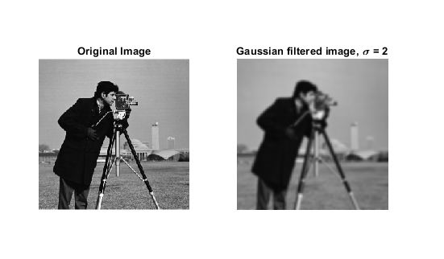
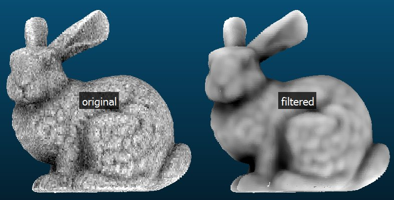

|
Home
|
PVCC
|
W3 Schools
|
Contact US
|
Chapter 2: Algorithm Discovery and Design
|
Chapter 3: The Efficiency of Algorithms
|
Saroj Tamang
|
Chapter 2: Algorithm
|
- Explain why natural language is not an effective tool for describing algorithms.
- Natural language can be extremely
verbose, causing the resulting algorithms to be rambling, unstructured,
and hard to follow.
- Problem 1:
A student has three grades; the final grade is the average of the three.
List the algorithmic steps to find the final grade.
-
Step 1: Input the first grade.
Step 2: Input the second grade.
Step 3: Input the third grade.
Step 4: Calculate the total sum of all grades.
Step 5: Calculate the division the total sum by the number of inputs.
Step 7: Output the average grade.
-
Problem 2:
A car owner recorded the car's previous car mileage, current mileage, and the number of gallons of gas the owner filled their tank with.
List the algorithmic steps to find the car's mpg (miles per gallon).
-
Step 1: Input the car's previous car mileage.
Step 2: Input the car's current mileage.
Step 3: Calculate the total sum of the car's previous car mileage and the car's current mileage.
Step 4: Input the number of gallons of gas the owner filled their tank with.
Step 5: Calculate the division of the total sum and the number of gallons of gas.
Step 6: Output mpg.
|
Chapter 2: Briefly define:
|
- Natural language:
a language that has developed and evolved naturally, through use by human beings, as opposed to an invented or constructed language,
as a computer programming language (often used attributively)
- Pseudocode:
Pseudocode is an informal way of programming description that does not
require any strict programming language syntax or underlying technology considerations.
- Sequential Operation (straight-line algorithm):
a finite sequence L of elements of G such that every element of L either belongs to S,
is the inverse of a preceding element, or the product of two preceding elements.
- Input:
used to create interactive controls for web-based forms
in order to accept data from the user
- Output:
a container element into which a site or app can inject
the results of a calculation or the outcome of a user action.
- Conditional Statements:
begins with an "if" statement to determine if an action should be taken.
- Boolean Condition:
Boolean expressions are logical statements that are either true or false.
- Algorithmic Discovery Process:
process mining techniques focused on discovering process
models starting from event logs.
|
Chapter 3: Briefly describe or define:
|
- Why algorithms should be correct?
Algorithms must be responsibly created to avoid discrimination and unethical applications.
- Why algorithms should be efficient?
The efficiency of an algorithm often gets worse rapidly as the size of the dataset increases.
- Program maintenance:
the process of modifying a software
or program after delivery to achieve any of these outcomes
- Importance of algorithm: ease of understanding
Algorithms give us the most ideal option of accomplishing a task.
- algorithmic elegance:
make your code look pretty by solving a problem with as few steps as possible.
- sequential search algorithm:
the simplest type of search, it is used when a list of integers is not in any order.
- order of magnitude:
an exponential change of plus or minus 1 in the value of a quantity or unit.
- selection sort:
algorithm that repeatedly searches remaining items to find the least one and moves it to its final location.
- flop(floating point operation):
FLOPS are typically used to measure the performance of a computer's processor.
- teraflop:
A teraflop is a trillion floating point operations per second.
- petaflop:
A petaflop is one thousand trillion, or one quadrillion, operations per second, and represents an extremely fast computing speed for a single machine.
- parallel proccessor:
a method in computing of running two or more processors (CPUs) to handle separate parts of an overall task.
- data cleanup problems:
the process of removing incorrect, duplicate, or otherwise erroneous data from a dataset.
- binary search algorithm:
a Search Algorithm to find a specific element located in an Array
- pattern matching:
a regular expression which the input's value must match in order for the value to pass constraint validation.
|
Karl Friedrich Gauss
- Give a brief overview of Carl Friedrich Gauss' mathematical abilities and scientific achievements.
wrote the first systematic textbook on algebraic number theory and rediscovered the asteroid Ceres.
- Describe Karl Frederich Gauss" algorithm for adding up the number from 1 to 100.
he found the sum of the integers from 1 to 100 to be 5,050.
- What are gaussian optics?
a framework for describing optical phenomena, which is based on geometrical optics (ray optics) and makes extensive use of the paraxial approximation.
- What is a "guassian blur" and how is it used in digital image editing?
the pixels nearest the centre of the kernel are given more weight than those far away from the centre.
|
Gaussian Blur Examples:
|


|
Sources
Schneider, Michael G., and Gersting, Judith L. Invitation to Computer Science. Cengage, 2019.
Friedrich Gauss 1
Friedrich Gauss 2
Friedrich 3
Friedrich 4
|
15 sources
Natural language
:Pseudocode
:Sequential Operation (straight-line algorithm)
:Input>
:Output
:Conditional Statements
:Boolean Condition
:Algorithmic Discovery Process
:Why algorithmic should be correct
:Why Algorithmic Should Be Efficient
:Program Maintaince
:Importance of algorithm: ease of understanding
:Algorithmic elegance
:sequential search algorithm
:order of magnitude
:Selection sort
:flop(floating point operation)
:teraflop
:petaflop
:parallel proccessor
:data cleanup problems
:binary search algorithm
:pattern matching
|
{kind=link}
{kind=link}